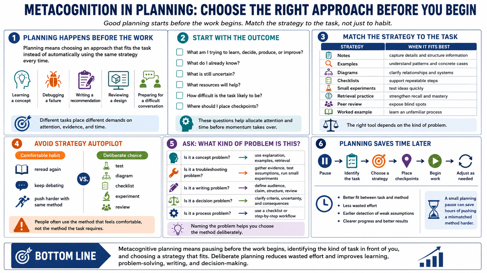

Planning and Strategy Selection
Connecting to LMS... Progress: in progress

Narration
Metacognition also appears before the work begins. Planning means choosing an approach that fits the task instead of automatically using the same strategy every time. Different tasks require different methods. Learning a concept, debugging a failure, writing a recommendation, reviewing a design, and preparing for a difficult conversation all place different demands on attention, evidence, and time.
Good planning starts with the outcome. What are you trying to learn, decide, produce, or improve? What do you already know? What is uncertain? What resources will help? How difficult is the task likely to be? Where should you place checkpoints? These questions help allocate attention and time before momentum carries you into the wrong approach.
Strategy selection includes choosing when to use notes, examples, diagrams, checklists, experiments, retrieval practice, peer review, or a worked example. A diagram may be the right tool when relationships are confusing. A checklist may help when steps are repeatable and easy to skip. A small experiment may be better than another long debate when the issue can be tested.
The practical risk is strategy autopilot. People often use the method that feels comfortable, not the method the task requires. A strong metacognitive habit is to pause and ask, what kind of problem is this? Then choose the strategy deliberately. That small moment of planning can save hours of effort that would otherwise be spent pushing a mismatched method harder.